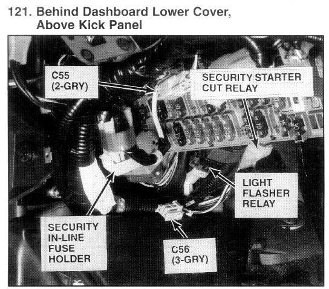

Operation CHARM
: Car repair manuals for everyone.
Home
>>
Acura
>>
1995
>>
Integra (RS, LS) L4-1834cc 1.8L DOHC PFI
>>
Repair and Diagnosis
>>
Relays and Modules
>>
Relays and Modules - Accessories and Optional Equipment
>>
Ignition Shut Down Relay (For Antitheft)
>>
Locations
Ignition Shut Down Relay (For Antitheft): Locations

Above Left Kick Panel